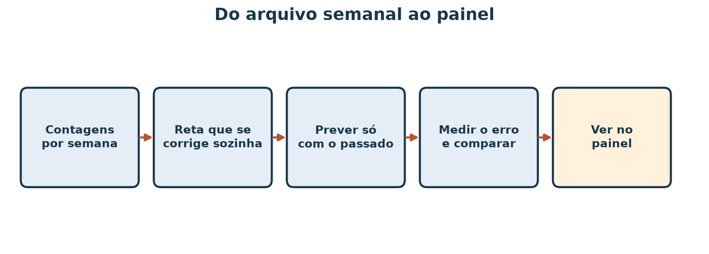
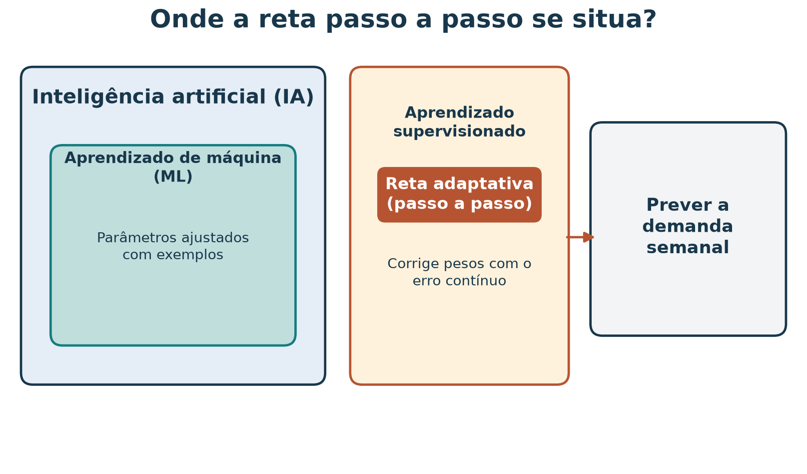
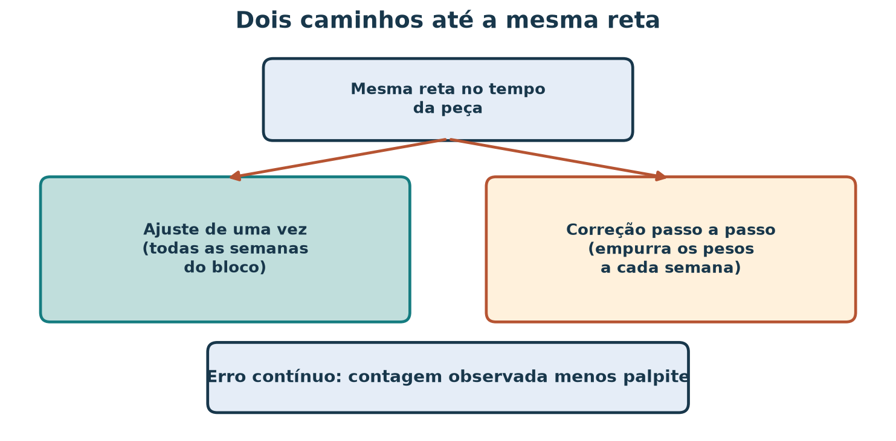
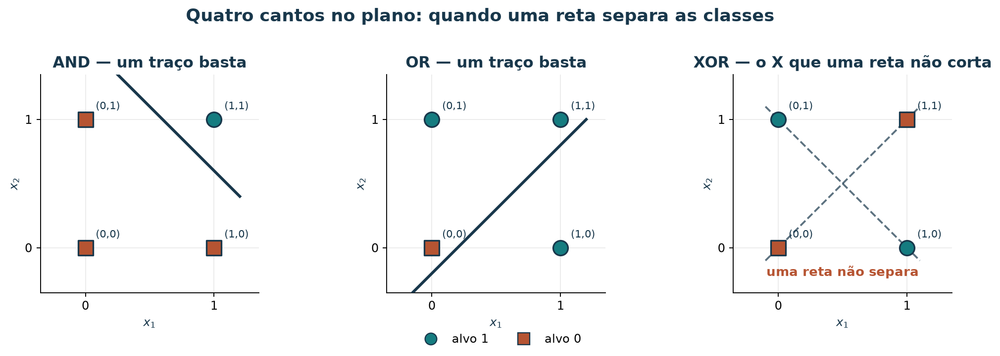
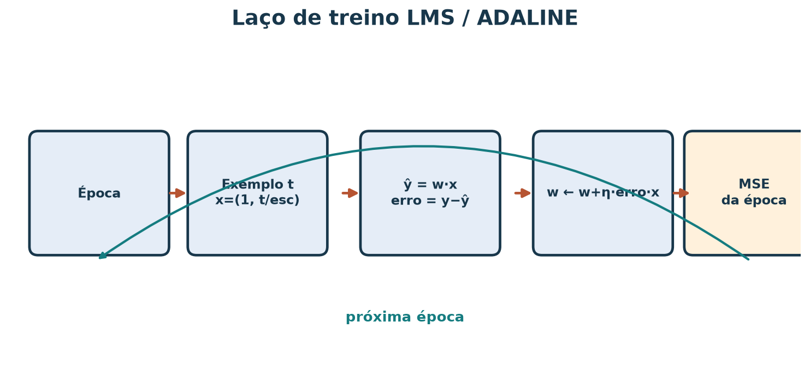
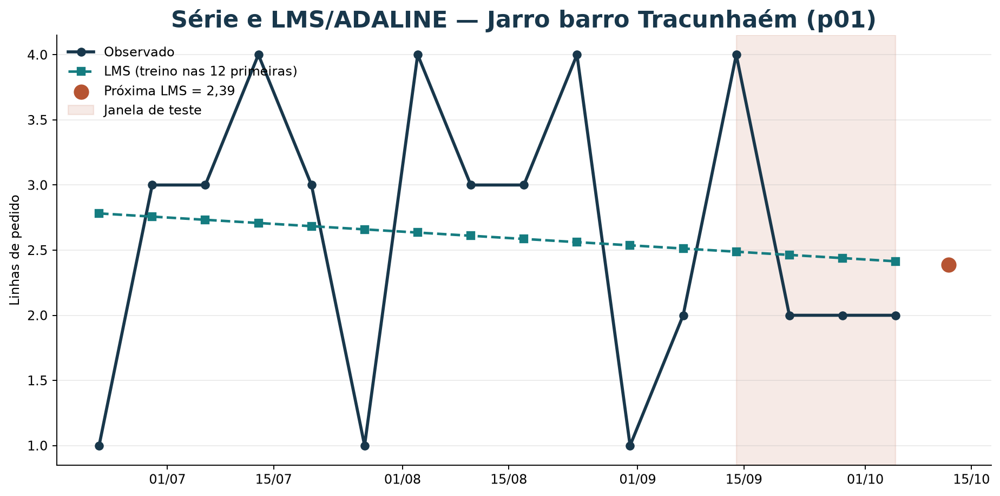
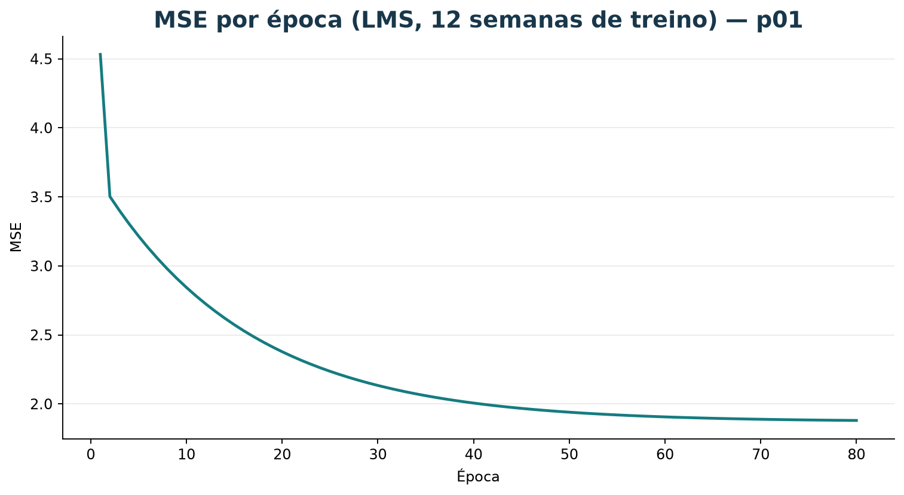
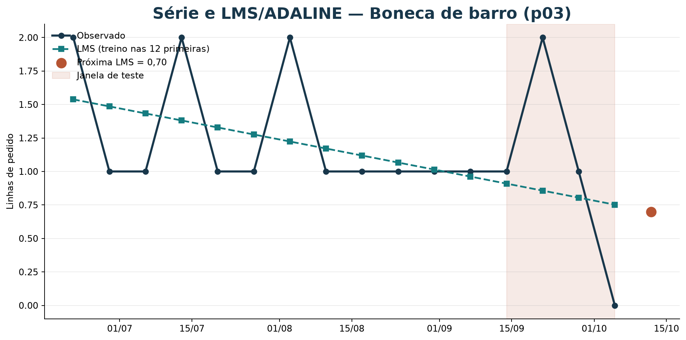
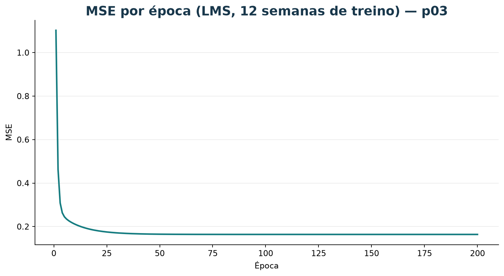
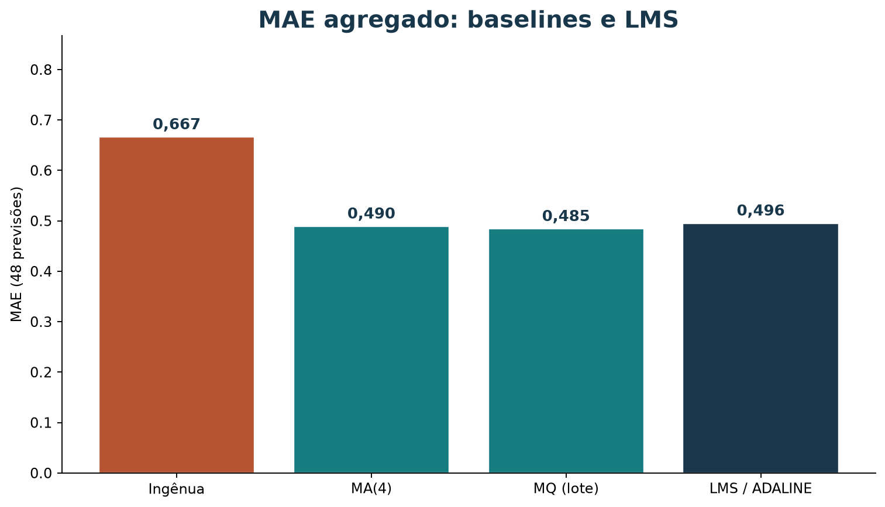

Previsão de demanda com perceptron / LMS (ADALINE)
Versão
web com explorador. Explorador no repositório: bi-demanda-perceptron/index.html.
Laboratório geométrico (fronteira, portas, PLA): bi-demanda-perceptron/lab/index.html.
Experimente o LMS neste tutorial
Escolha produto e método. Veja a curva de MSE e compare o MAE com os baselines. As 16 semanas são sintéticas.
A loja já sabe pedir uma reta para resumir a demanda semanal — isso foi a aula de mínimos quadrados. Aqui a reta é a mesma família; o que muda é o caminho até os pesos: em vez de ajustar o bloco de uma vez, a regra corrige o palpite a cada semana, guiada pelo erro contínuo (observado menos previsto).
Antes de voltar às contagens, um laboratório no plano mostra o primo classificador: o Perceptron de Rosenblatt, a fronteira linear e o algoritmo PLA. Os dois usam a mesma soma ponderada; muda a saída (lado da classe versus nível contínuo).
Os dados continuam sintéticos
(dados/vendas_semanais.csv). Os exemplos trabalhados de
demanda são Jarro (p01) e Boneca (p03).
Leitura em ritmo próprio. Termos técnicos reunidos no glossário ao final.
1. A pergunta que já conhecemos
Quantas linhas de pedido cada peça tende a gerar na semana seguinte? A unidade é a mesma da média móvel e da reta de mínimos quadrados. O ritual de avaliação também: treinar só com o passado, prever a próxima semana, só então incorporar o valor observado.
O que esta aula acrescenta é um modo de chegar à reta: empurrar os pesos um pouco depois de cada semana, em vez de resolver o lote inteiro de uma só vez.

Figura 0 — Caminho desta aula: ler as contagens, deixar a reta se corrigir semana a semana, prever só com o que já fechou, medir o erro frente a outros métodos e conferir no painel.

Figura 1 — A reta passo a passo fica no aprendizado supervisionado: entrada e alvo conhecidos, parâmetros ajustados com exemplos. As áreas são conceituais, não uma medida de tamanho.
2. Dois caminhos até a mesma reta
No tutorial de mínimos quadrados, cada produto ganha uma reta
ajustada de uma vez ao bloco de semanas. Os coeficientes saem do critério clássico: minimizar a soma dos resíduos ao quadrado.
Esta aula mantém a mesma forma — uma reta no tempo — e muda o modo de chegar aos pesos. A regra passo a passo (ADALINE / LMS) atualiza (w_0) e (w_1) a cada exemplo, guiada pelo erro contínuo (y_t - \widehat{y}_t). Na série curta do marketplace, esse caminho itera até aproximar a mesma reta do ajuste em lote.

Figura 2 — À esquerda, o bloco inteiro de uma vez. À direita, um empurrão nos pesos depois de cada semana. Em ambos os casos o erro é contínuo: contagem observada menos palpite.
3. História curta do modelo linear adaptativo
A ideia de “somar entradas, atravessar um limiar ou uma saída contínua e corrigir pesos com o erro” tem nome e data. O caminho abaixo prepara o laboratório no plano e o LMS na loja.
3.1 Neurônio formal e limiar
Nos anos 1940, Warren McCulloch e Walter Pitts propuseram um neurônio formal: entradas binárias, estímulos excitatórios (e, se houver, inibitórios) e um limiar (\theta). O neurônio dispara quando a soma dos estímulos ativos ultrapassa o limiar.
Com duas entradas e limiar 2, o desenho realiza um AND lógico (precisam estar as duas ativas). Com limiar 1, basta uma — um OR. Com uma entrada inibitória, dá para negar. O modelo é lógico e abstrato: ainda não há algoritmo de treino. Ele prepara o terreno: unidade + limiar + composição.
3.2 Perceptron de Rosenblatt
No fim dos anos 1950, Frank Rosenblatt descreveu o perceptron: entradas reais, cada uma com um peso, bias (o truque (x_0 = 1)) e ativação (\mathrm{sinal}):
Quando o rótulo previsto discorda do verdadeiro, a regra PLA (Perceptron Learning Algorithm) atualiza
(com (x = (1, x_1, x_2)) e (y\in{-1,+1})). O erro que guia o passo é o erro de classificação (lado certo ou errado).
O perceptron clássico responde bem a perguntas do tipo “a peça sai ou não sai?”. A demanda semanal pergunta outra coisa: quantas linhas de pedido tendem a aparecer.
3.3 Widrow–Hoff, ADALINE e LMS
Bernard Widrow e Marcian Hoff formularam a regra LMS (least mean squares), associada ao ADALINE (adaptive linear neuron): a saída é contínua, a perda é quadrática, e a atualização dos pesos segue o erro (y - \widehat{y}) a cada exemplo.
É o mesmo espírito de “corrigir o modelo com o residual” dos mínimos quadrados, agora passo a passo, com uma taxa de aprendizado (\eta), em vez de uma única solução fechada do sistema normal.
3.4 Contagem da loja, não bit de prateleira
| Alvo | Família natural nesta aula |
|---|---|
| Bit / classe (saiu / não saiu) | Perceptron clássico + PLA |
| Contagem / nível contínuo (linhas na semana) | ADALINE / LMS |
A demanda semanal pede o segundo quadro. O laboratório das seções 4–5 fixa o primeiro.
4. Laboratório: uma reta no plano
Abra o laboratório geométrico e percorra os três painéis na ordem.
4.1 Fronteira e vetor de pesos
Com duas entradas, a fronteira é a reta (\theta_0 + \theta_1 x_1 + \theta_2 x_2 = 0). O vetor ((\theta_1, \theta_2)) é perpendicular à reta e aponta para o semiplano da classe (+1). Mover só (\theta_0) translada a reta; mudar (\theta_1) e (\theta_2) gira a normal.
4.2 AND, OR e XOR
Codificando falso como (-1) e verdadeiro como (+1):
| Função | Separável por uma reta? |
|---|---|
| AND | Sim |
| OR | Sim |
| XOR | Não |
No AND, só o canto ((+1,+1)) é verdadeiro. No OR, só ((-1,-1)) é falso. No XOR, os verdadeiros ocupam cantos opostos na diagonal: qualquer reta que tente juntá-los puxa um falso ou deixa um verdadeiro do lado errado.

Figura 3 — Verde: alvo 1; terracota: alvo 0 (na figura estática). AND e OR admitem um traço; XOR pede outra geometria. No laboratório a codificação é ±1.
Uma rede com duas unidades na primeira camada e uma na saída consegue realizar o XOR compondo fronteiras. O PLA sozinho, em uma unidade, não sobe essa escada — daí a ponte para MLP e backpropagation no tutorial de redes.
4.3 PLA ao vivo
No terceiro painel, o algoritmo procura um ponto mal classificado e aplica (\theta \leftarrow \theta + \eta, y, x). No modo separável, a curva de erros chega a zero. No não separável, ela oscila: não há garantia de convergência.
5. Exemplo numérico do PLA
Quatro pontos no plano (OR com codificação ±1), bias com (x_0 = 1):
| (x_1) | (x_2) | (y) |
|---|---|---|
| 1 | 1 | (+1) |
| −1 | 1 | (+1) |
| 1 | −1 | (+1) |
| −1 | −1 | (−1) |
Comece com (\theta^\top = (-1,-1,-1)) e (\eta = 1). O ponto ((-1,1)) com alvo (+1) está do lado errado:
Atualização:
Repita até não restar erro (no laboratório, use Um passo e acompanhe a curva). A intuição geométrica: somar (y,x) gira o vetor de pesos na direção que alinha melhor o semiplano com o ponto corrigido.
6. Da classificação à contagem: PLA e LMS
A mesma soma (w^\top x) aparece nos dois mundos.
| Perceptron + PLA | ADALINE + LMS | |
|---|---|---|
| Saída | (\mathrm{sinal}(w^\top x)) | (w^\top x) (contínua) |
| Erro que guia | lado da classe | (y - \widehat{y}) |
| Atualização típica | (w \leftarrow w + \eta, y, x) (se errou) | (w \leftarrow w + \eta,(y-\widehat{y}), x) |
| Pergunta da loja | “sai / não sai?” | “quantas linhas nesta semana?” |
Na demanda semanal, (x_t = (1,\ t/\mathrm{escala})) e o alvo é a contagem (y_t). O LMS é o primo regressivo do PLA: mesma geometria linear, perda quadrática, saída contínua.
7. Corrigir o palpite semana a semana
Imagine que a loja já tem um palpite linear para o Jarro: “cerca de tantas linhas nesta semana”. Fecha a semana, conta o observado, e vê o quanto o palpite errou. Em vez de refazer a conta do zero com todas as semanas de uma só vez, a regra LMS empurra os pesos um pouco na direção que reduziria aquele erro — e passa à semana seguinte.
Nomes do passo
- (\widehat{y}_t): palpite contínuo para a semana (t).
- (y_t - \widehat{y}_t): erro contínuo (observado menos palpite).
- (\eta): taxa de aprendizado — o tamanho do empurrão.
- (x_t): vetor de entrada daquele exemplo; aqui, (x_t = (1,\ t/\mathrm{escala})).
- (w = (w_0, w_1)): bias e peso do tempo normalizado.
A atualização em uma linha
A unidade LMS prevê
(com tempo normalizado no treino para estabilizar o passo) e atualiza
É o espírito do perceptron (atualização local pelo erro), com perda
quadrática. O treino abaixo é uma unidade linear
adaptativa — o ponto de partida histórico das redes mais profundas, sem
ainda ser backprop de uma rede multicamada. Nos exemplos trabalhados
(p01, p03), esse laço roda com (\eta = 0{,}05)
e 200 voltas completas (épocas) sobre as 12 primeiras
semanas.

Figura 4 — Dentro de cada volta, todas as semanas do bloco de treino passam pela correção; o erro médio da volta resume o ajuste.
8. Exemplo trabalhado 1 —
Jarro (p01)
Gere o painel e os pesos (na raiz do repositório):
uv run python scripts/gerar_bi_demanda_perceptron.pyO script grava
material/bi-demanda-perceptron/pesos_p01.json (e também
pesos_p03.json), além de dados.js do
explorador. O tempo entra normalizado
(t / (n−1) no treino) para o passo ficar estável.
Números deste material: 200 épocas, (\eta = 0{,}05),
treino nas 12 primeiras semanas. Para Jarro
(p01):
| Quantidade | Valor aproximado |
|---|---|
| Bias (w_0) | 2,782 |
| Inclinação (espaço normalizado) | −0,269 |
| Escala | 11 |
| Erro quadrático médio na última época | 1,307 |
Previsão em t = 16 (piso ≥ 0) |
2,390 |
A reta passo a passo aproxima a de mínimos quadrados em lote nesta série curta (aquela previa cerca de 2,425 na mesma extrapolação).
# Mesma lógica de scripts/lms_demanda.py — caminho feliz, comentado
from pathlib import Path
import sys
sys.path.insert(0, "scripts")
from lms_demanda import treinar_lms, previsao_nao_negativa
import csv
# Série de um produto a partir do CSV
valores = []
with Path("dados/vendas_semanais.csv").open(encoding="utf-8", newline="") as fh:
for row in csv.DictReader(fh):
if row["product_id"] == "p01":
valores.append(int(row["order_line_count"]))
# Treino só nas 12 primeiras semanas
w, hist_mse, escala = treinar_lms(valores, epocas=200, lr=0.05, ate=12)
proxima = previsao_nao_negativa(w, float(len(valores)), escala)
print(f"bias={w[0]:.4f} inclinacao={w[1]:.4f} escala={escala}")
print(f"erro quadrático médio (última época)={hist_mse[-1]:.4f}")
print(f"previsão t={len(valores)} → {proxima:.4f}")A curva de erro médio por época deve cair e estabilizar. Se não cair, revise (\eta) ou o número de épocas.

Figura 5 — Observações e reta ajustada nas 12 primeiras semanas; o ponto terracota extrapola a semana seguinte.

Figura 6 — A curva deve descer e estabilizar ao longo das 200 épocas.
9. Exemplo trabalhado 2 —
Boneca (p03)
Com os mesmos hiperparâmetros nas 12 primeiras semanas de Boneca de barro:
| Quantidade | Valor aproximado |
|---|---|
| Bias (w_0) | 1,538 |
| Inclinação (espaço normalizado) | −0,576 |
| Escala | 11 |
| Erro quadrático médio na última época | 0,164 |
Previsão em t = 16 (piso ≥ 0) |
0,700 |
Nas quatro semanas finais, prevendo só com o
passado, o erro absoluto médio desta reta para p03
fica em torno de 0,636 (produto isolado). A reta de
mínimos quadrados em lote para o mesmo produto previa
0,800 em t = 16; os dois caminhos
permanecem na mesma família, com rotas diferentes até os pesos.
Os pesos gravados estão em material/bi-demanda-perceptron/pesos_p03.json.

Figura 7 — Mesmo ritual do Jarro; outro produto, outros pesos.

Figura 8 — Curva de treino de p03 nas mesmas 200
épocas.
10. Avaliar no tempo
Nas quatro últimas semanas, a cada origem o modelo re-treina só com o passado e prevê a semana seguinte (piso em zero). Compare o erro absoluto médio com a previsão ingênua, a média móvel de quatro semanas e os mínimos quadrados em lote — mesmas 48 previsões:
| Método | Erro absoluto médio agregado |
|---|---|
| Ingênua | 0,667 |
| Média móvel (4 semanas) | 0,490 |
| Mínimos quadrados (lote) | 0,485 |
| Reta passo a passo (LMS) | 0,496 |
Nesta amostra sintética curta, a reta passo a passo fica perto do ajuste em lote — o esperado quando a família de funções é a mesma e o treino online converge.
11. Explorador no painel
O explorador
mostra série, curva de treino, erro absoluto médio agregado e tabela.
Selecione Jarro (p01) e Boneca
(p03) — os dois exemplos deste tutorial. Guia
curto em bi-demanda-perceptron/README.md.
O laboratório geométrico fica ao lado: fronteira, portas e PLA, antes de voltar às contagens.

Figura 9 — Mesmas 48 previsões para todos os métodos. Menor valor é melhor nesta métrica.
12. Endpoint BentoML
Com os pesos gerados para p01 (serviço de
demonstração):
uv run bentoml serve service_perceptron_demanda:PrevisaoLmsDemanda --reloadChame a API prever com indice_semana (por
exemplo 16 para a semana após o histórico). O mesmo cálculo
local — com a escala gravada no JSON:
import json
from pathlib import Path
pesos = json.loads(
Path("material/bi-demanda-perceptron/pesos_p01.json").read_text(encoding="utf-8")
)
t = 16
escala = float(pesos["escala"])
bruto = pesos["bias"] + pesos["inclinacao"] * (t / escala)
print(max(0.0, bruto))Os dois caminhos devem coincidir. Para Boneca, leia
pesos_p03.json com a mesma fórmula.
Glossário
| Termo | Leitura nesta aula |
|---|---|
| Neurônio MP | Modelo de McCulloch–Pitts: entradas binárias e limiar. |
| Perceptron | Classificador de Rosenblatt: (\mathrm{sinal}(w^\top x)); atualiza com PLA. |
| PLA | Algoritmo de aprendizado do Perceptron: (\theta \leftarrow \theta + \eta, y, x) nos erros. |
| ADALINE / LMS | Unidade linear adaptativa: saída contínua; atualiza com (y - \widehat{y}). |
| Separabilidade linear | Classes que um único traço reto consegue separar no plano. |
| Época | Uma volta completa por todos os exemplos do bloco de treino. |
| Taxa de aprendizado (\eta) | Tamanho do empurrão nos pesos a cada exemplo. |
| Bias (w_0) | Termo constante da reta (intercepto no espaço normalizado). |
| Inclinação (w_1) | Peso do tempo normalizado. |
| Escala | Fator que divide (t) no treino para estabilizar o passo (aqui, (n_{\mathrm{treino}}-1)). |
| Erro contínuo / resíduo | Observado menos palpite, (y_t - \widehat{y}_t). |
| Erro absoluto médio (MAE) | Média de (\lvert y - \widehat{y}\rvert) nas previsões de teste. |
| Erro quadrático médio (MSE) | Média de ((y - \widehat{y})^2); no treino LMS, resume cada época. |
| Prever só com o passado | Ritual temporal: treina sem ver a semana de teste, prevê, só então incorpora o observado (às vezes chamado walk-forward). |
| Mínimos quadrados em lote | Ajuste da reta ao bloco inteiro de uma vez (tutorial irmão). |
Referência
- ADALINE / LMS: atualização pelo erro contínuo (Widrow–Hoff).
- Perceptron / PLA: Rosenblatt; neurônio formal: McCulloch–Pitts.
- Laboratório interativo do Caderno:
material/bi-demanda-perceptron/lab/(pedagogia de fronteira/portas/PLA alinhada a materiais abertos pt-BR, entre eles o curso de Deep Learning de L. S. Kupssinskü, CC BY-SA 4.0). - Leituras CESAR ingeridas:
wiki/leituras/ads032/(Kup, Minicurso RNAs, Harpya). - Código LMS:
scripts/lms_demanda.py,scripts/gerar_bi_demanda_perceptron.py,service_perceptron_demanda.py.